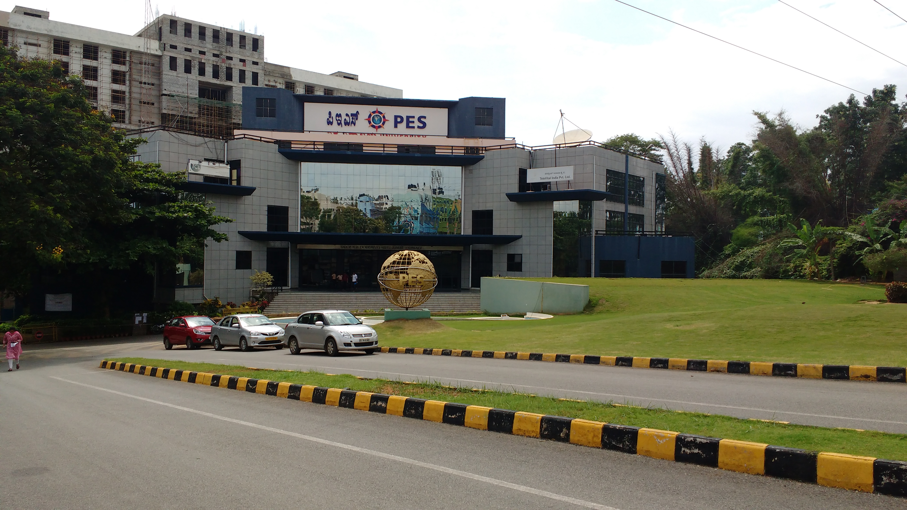

Welcome to World of HTML
This is written using heading tag
This is paragraph written by using the "p" tag
HTML is a abbreviation for Hypertext Markup Language
we get a new line just by using a break tag which works exactly similar to pressing a enter button in word file.
WE GET A STRAIGHT LINE BY USING "hr"-horizontal rule.
This is for the 1st time I'm using the superscript & subscript tags.
the text can be made bold by use of "b" tag
font can be changed using "i" tag
we make use of character entities like "&" i.e, ampersand followed by
gt; for greater than
lt; for less than
nsbp; for space. NBSP=non breaking space

the size of the picture can be altered by use of the height & width attributes.
"alt" is used if picture is not available .
it gives alternate text in absence of the pic.
it helps the blind people for screen reading.
TOP